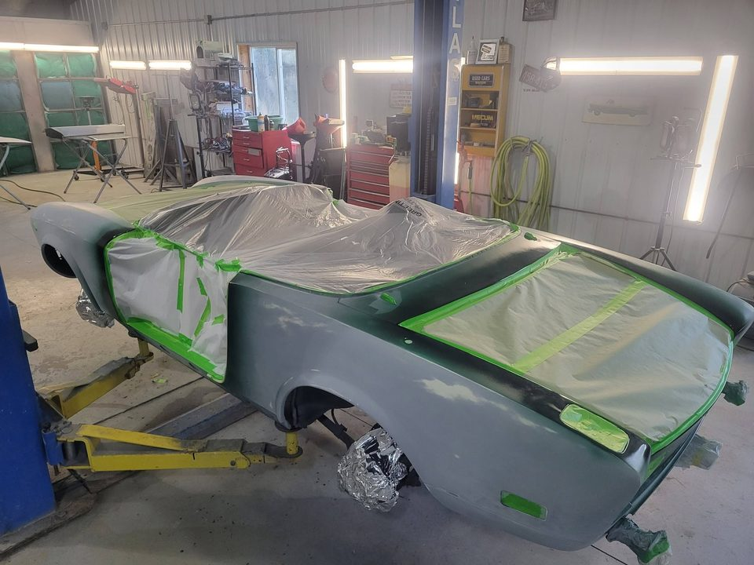
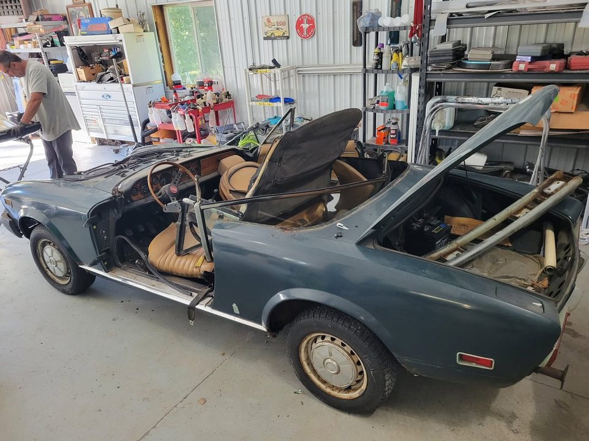
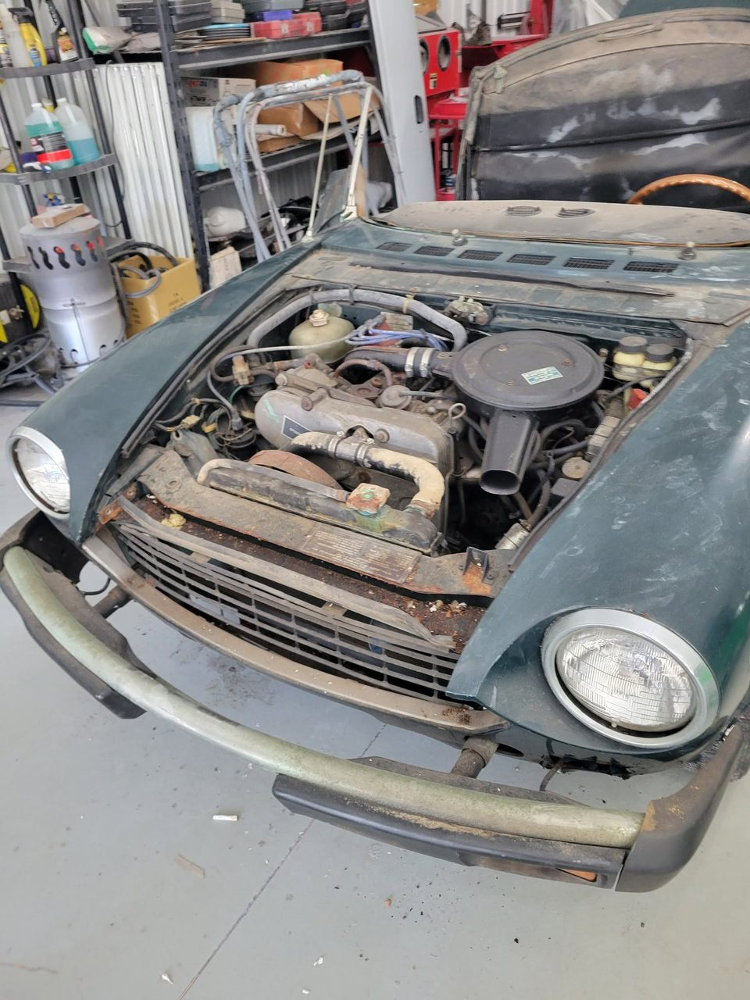
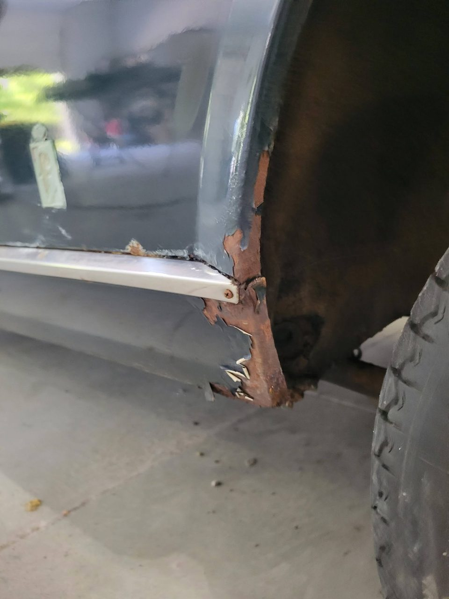
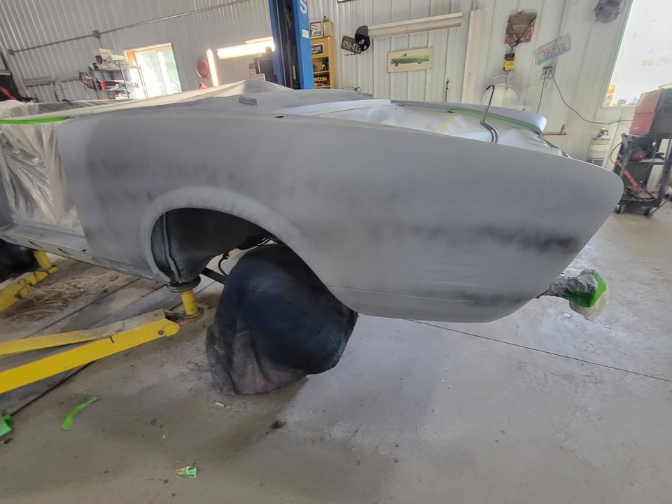
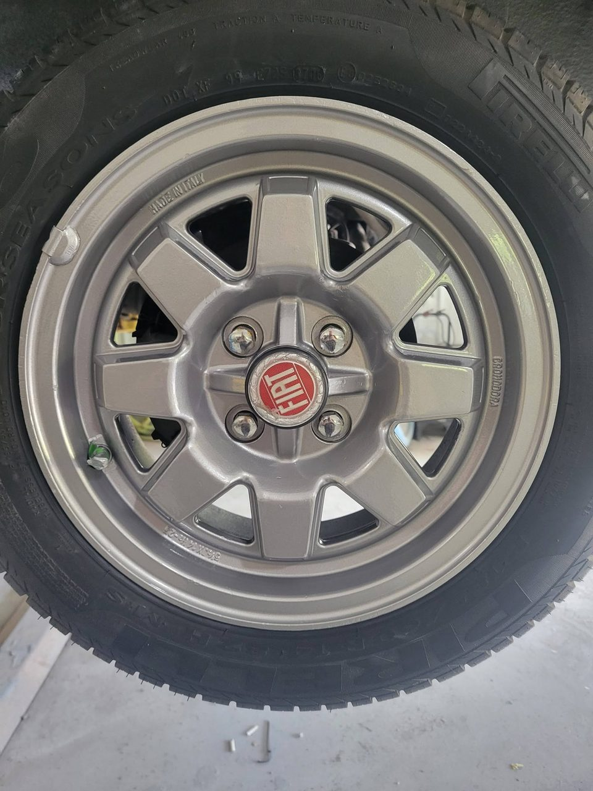
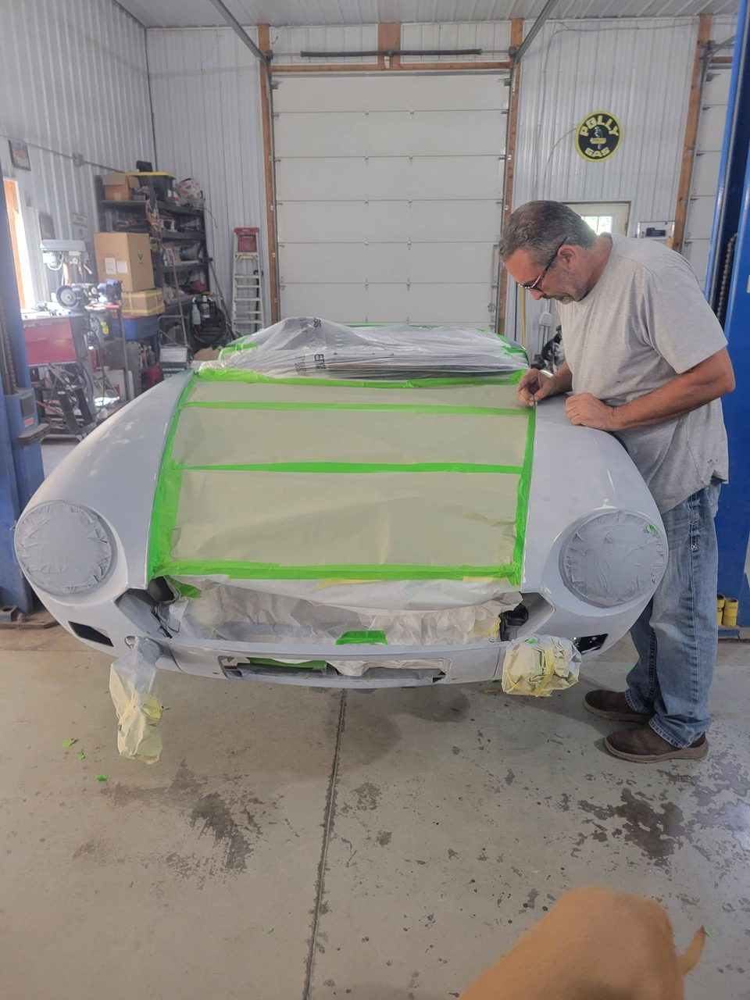
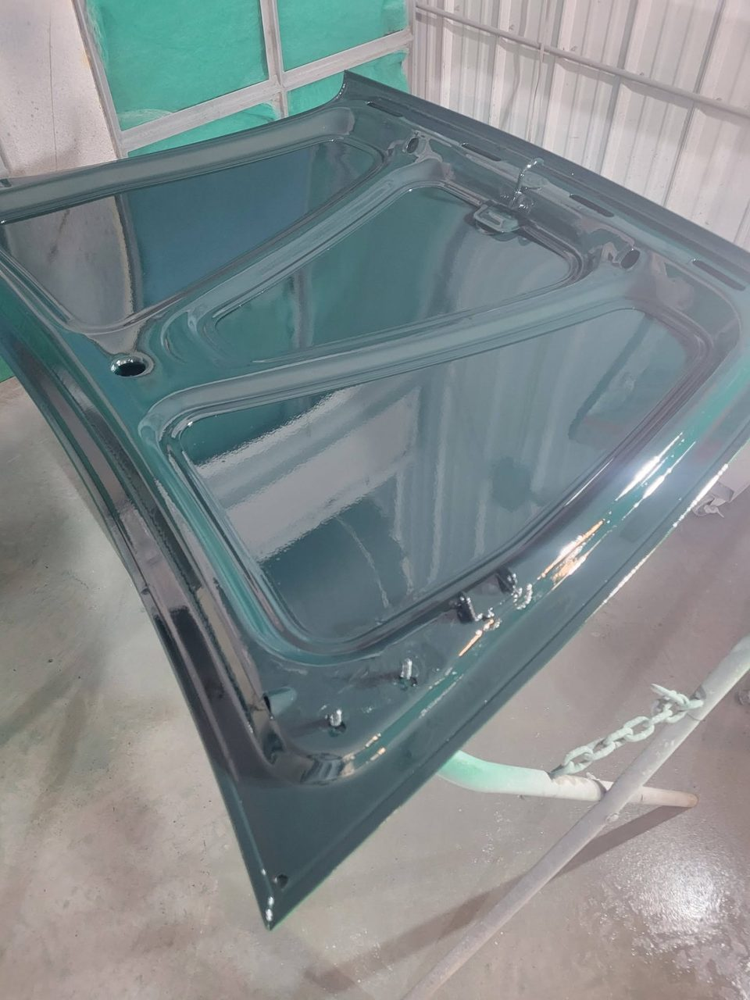
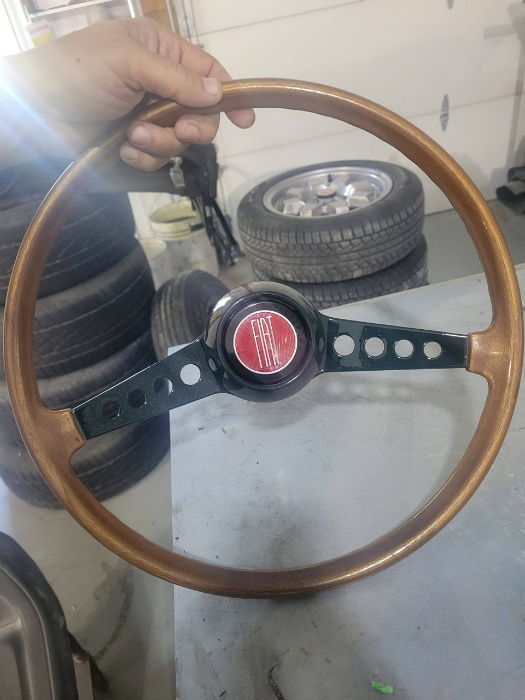

Green Beans
1970s Fiat 124 Sport Spider · Full Restoration

The Story
Little Italian. Big Comeback.
GREEN BEANS is a 1970s Fiat 124 Sport Spider — a little Italian roadster with a twin-cam heart that rolled in complete, honest, and worn straight through. Under the dark green paint the arches and rockers had gone the way Michigan arches and rockers go.
The interior came out, the shell came down to clean metal, and the rust was cut back to solid steel before primer went anywhere near it. Then the color: a deep, gloss green laid down panel by panel — the same character the car arrived with, several decades fresher.
It's on the lifts right now. Fresh Fiat alloys are wrapped and waiting, the wood-rim wheel is ready to go back in, and the panels are coming back green one by one. Follow along — this page grows as the build does.
Build Sheet
The Specs
- ✓1970s Fiat 124 Sport SpiderTwin-cam Italian roadster, arrived complete and original.
- ✓Rust Cut Back To Solid SteelArches, rockers and floors opened up and repaired, not patched over.
- ✓Deep Green RefinishStripped, primed, and resprayed in a rich gloss green — panel by panel.
- ✓Fresh Fiat AlloysNew wheels with the Fiat crest, refinished to match the build.
- ✓Wood-Rim Wheel PreservedThe original tiller stays — cleaned up, Fiat horn button and all.
- ✓Photo-Documented BuildEvery stage captured since day one. In progress now.
The Journey So Far
Build Gallery








